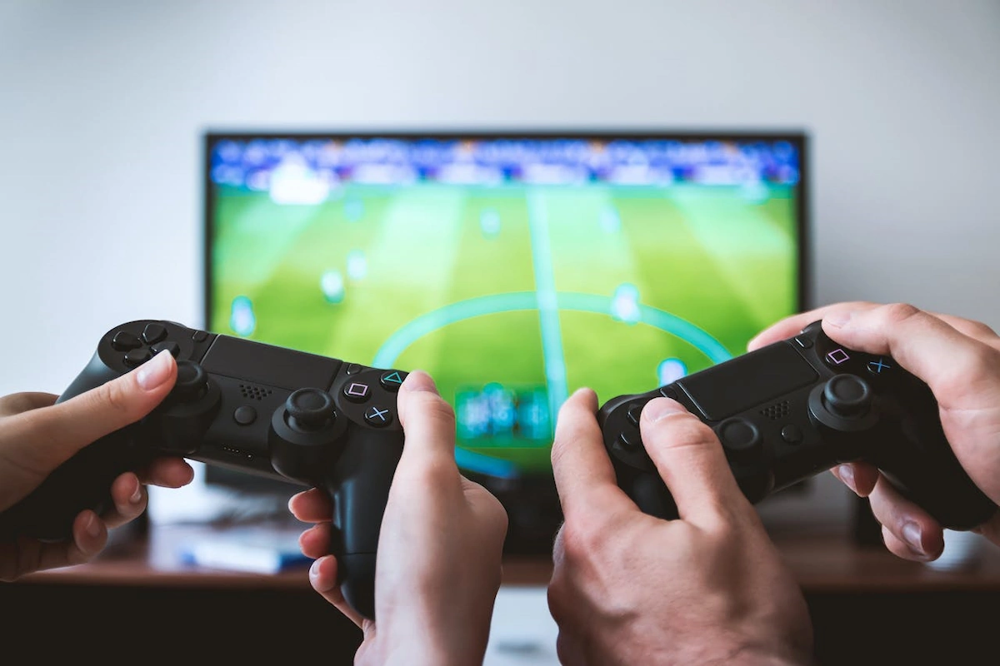

mijn ervaring
mijn gaming geschiedenis
Ik ben 12 jaar geleden begonnen met gamen. Ik ben begonnen met gamen op de playstation no 5 jaar op de playstation gegamed te hebben ben ik overgegaan naar de computer waar ik nu al 7 jaar op game. een paar jaar geleden was gamen een heel groot ding voor mij vooral in de corane periode in die tijd ben ik semi-profesional gaan gamen.
welke genre ik het meest speel
De genre die ik het meest speel is simulatie en race games. dit komt omdat ik het leuk vind dat je tegen andere mensen kan racen waardoor de competitie veel hoger is dan dat je alleen tegen ai zou spelen en je krijgt meteen een beetje het gevoel alsof je er echt in zit vooral als je een vr headset gebruikt of dan bijvoorbeeld een simulatie stuurtje gebruikt of een flightstick.
